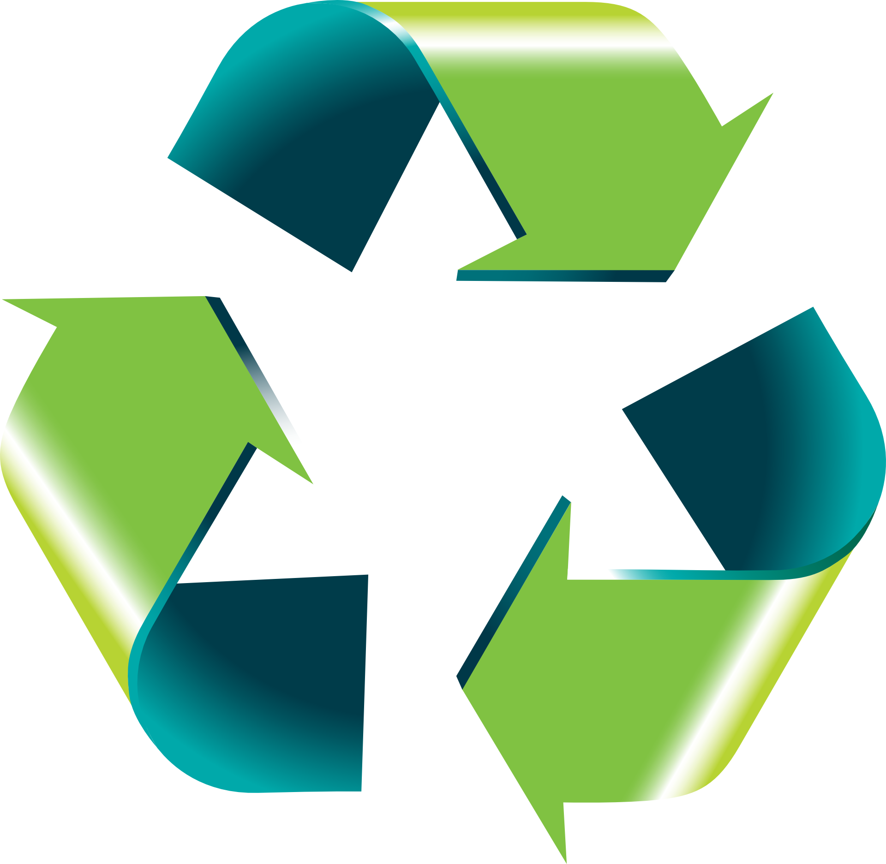

Reciclagem - Origem da palavra e significado
A palavra reciclagem vem do inglês, onde “re” significa repetir e “cycle” ciclo, unindo as 2 temos Repetir o Ciclo, por isso o símbolo da reciclagem são 3 setas formando um “ciclo” eterno, mostrando que toda a matéria-prima pode ser reutilizada.
Podemos definir a reciclagem como um processo de reaproveitamento de produtos feito a partir matérias-primas, as convertendo em novos materiais idênticos aos anteriores, diminuindo a produção de lixo, o consumo de novas matérias-primas para a produção de novos objetos e produtos e a poluição no ar e na água causada pelos descartes em lugares inadequados.
A reciclagem faz parte dos três componente na hierarquia dos resíduos, também conhecido como os três R’s, são eles: redução, reutilização e a própria reciclagem.